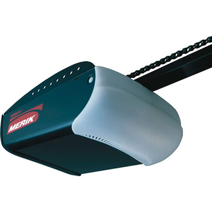
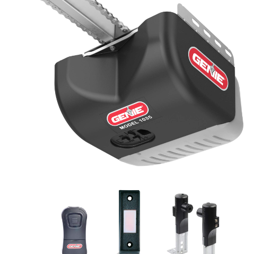
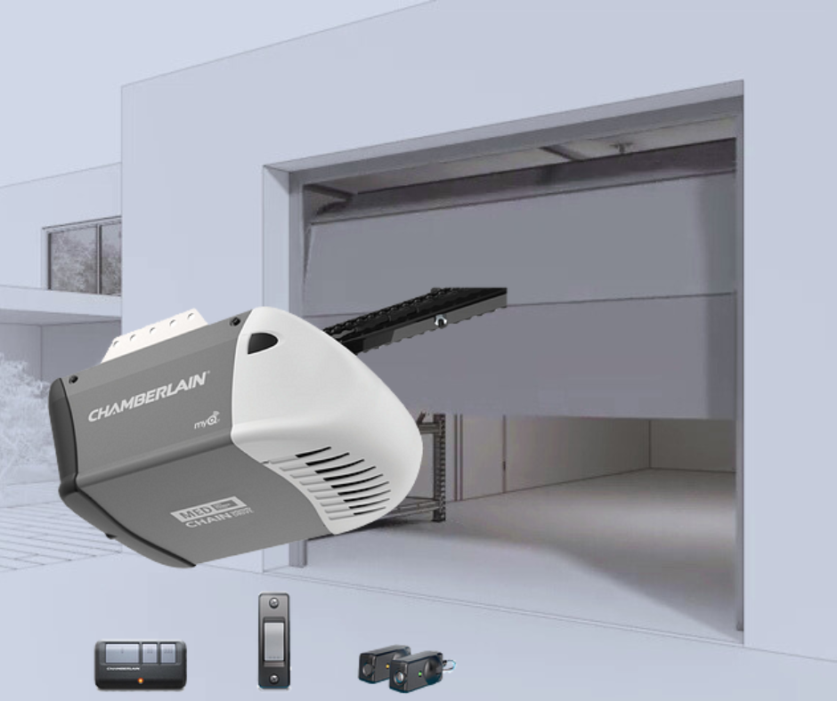
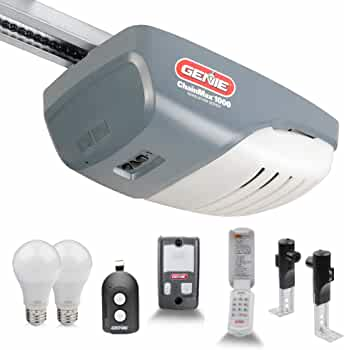
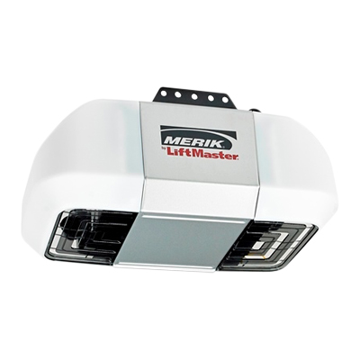
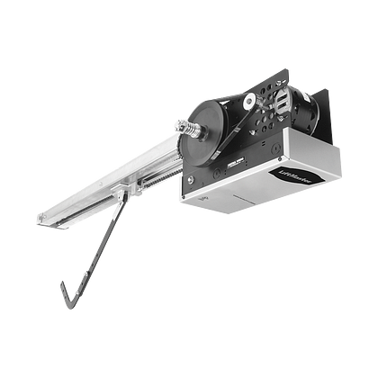

Paquetes de nuestros productos
Explora nuestra amplia selección de puertas de cochera de alta calidad.
Motor sencillo de garaje de uso residencial para puertas pequeñas de bajo peso.
- Motor de 1/2 HP.
- Hasta 50 controles inalámbricos.
- Función de cierre automático.
- Compatible con cualquier tipo de botón de apertura (COM y NO, función paso a paso).
- Alarma por mantenimiento preventivo.
- Salida de 24vcd para conexión de cerradura eléctrica.
- Incluye 2 controles y 1 botonera de pared inalámbrica.

*Batería de respaldo no incluida
MX$ 5,122
Abridor de puerta de garaje con respaldo de batería Wi-Fi de transmisión por cadena en riel tubular.
- Control por teléfono inteligente: controle, asegure y supervise el garaje con la aplicación myQ, en cualquier momento y desde cualquier lugar.
- Respaldo de batería: abre/cierra la puerta del garaje incluso cuando no hay energía.
- Tipo de transmisión: transmisión por cadena de larga duración, en sistema de riel tubular.
- Tecnología de garaje de próxima generación: conectividad Wi-Fi® mejorada y memoria mejorada para admitir nuevas funciones de MyQ.
- Incluye: 1 control, 1 botonera de pared cableada, batería de respaldo, fotoceldas.

MX$ 6,980
Motor para puerta de garaje residencial en CC, respaldo de batería, accionamiento por cadena y Wi-Fi en riel tubular para fijaciones más rígidas.
- El Wi-Fi® incorporado hace posible el control desde un teléfono inteligente con la aplicación myQ®.
- El motor de CC entrega una operación silenciosa y sin problemas.
- Accionamiento por cadena de fuerza industrial.
- Tecnología para garajes de última generación: conectividad Wi-Fi mejorada y memoria optimizada para admitir nuevas funciones y soluciones de myQ.
- Tecnología Bluetooth integrada: reduce el tiempo de configuración y facilita aún más la conexión a la aplicación myQ, a otros dispositivos myQ y a soluciones basadas en la tecnología para hogares inteligentes.
- myQ Diagnostics en la aplicación de myQ proporciona información en tiempo real para la puerta de su garaje a través del informe de salud. Reciba alertas y códigos de error en la aplicación si surge un problema y conéctese con un profesional para recibir servicios si es necesario.
- Incluye: 1 control, 1 botonera de pared cableada, batería de respaldo, fotoceldas.

MX$ 7,320
Motor de gran capacidad de fuerza para garaje con Wi-Fi, montaje en la pared y respaldo de batería de CC.
- Abre-puerta de garaje con Wi-Fi, montaje en la pared y respaldo de batería de CC.
- El diseño de montaje en la pared libera espacio en el techo en el garaje y disminuye el ruido y la vibración.
- El Wi-Fi® hace posible el control desde el teléfono celular con la aplicación MyQ®.
- El respaldo de batería le permite abrir/cerrar la puerta incluso cuando hay un corte en el suministro de electricidad.
- Incluye iluminación LED remota MyQ de 1,500 lúmenes.
- El cerrojo automático de la puerta del garaje bloquea la puerta después de cerrarla.
- Incluye: 1 control, 1 botonera de pared cableada, batería de respaldo, fotoceldas, cerrojo, lámpara LED.

MX$ 14,892
Motor de garaje de alto rendimiento en CC de gran fuerza.
- Funcionamiento silencioso.
- Arranque y paro suave.
- PosiLock® protege electrónicamente la puerta contra una apertura forzada.
- Batería de respaldo opcional que garantiza el funcionamiento del abrepuertas durante fallas de energía eléctrica.
- Usos del producto: Este equipo está diseñado para cualquier tipo de apertura de puertas con un perfecto desempeño.
Beneficios:
- Ajuste electrónico de límites.
- Se puede agregar una batería de respaldo para garantizar su funcionamiento en caso de cortes de energía eléctrica.
Característica técnica principal:
- Este dispositivo puede usarse en puertas seccionales, abatibles, corredizas y/o ascendentes.
- Para puertas ligeras y medianas.

MX$ 8,344
Operador de garaje industrial de alta potencia.
- Para uso industrial.
- Motor de alta potencia.
- Control remoto.
- Construcción resistente.
- Incluye: 2 controles remotos, receptor y fotocélulas.
Características:
- Motor: 1 HP.
- Peso máximo de la puerta: 600 kg.
- Tiempo de apertura/cierre: 15-20 segundos.
- Uso intensivo.

MX$ 23,842
Motor para puertas en uso industrial de pequeño y gran tamaño.
- Ciclo de servicio: 25 por hora; hasta 90 ciclos por día.
- Montaje lateral a la pared para puertas verticales o de gran elevación.
- Rejas y puertas enrollables.
- Montaje en pared o cubierta.
- Incluye: 2 controles remotos, receptor y fotocélulas.
- Temporizador de cierre integrado programable de 5 a 60 segundos en incrementos de 5 segundos.
- Permite el cierre automático por temporizador de una puerta una vez que esta se termina de abrir por completo.
Características:
- Motor: 1 HP.
- Peso máximo de la puerta: 600 kg.
- Tiempo de apertura/cierre: 15-20 segundos.
- Uso intensivo.

MX$ Precio a cotizar, pedir información.